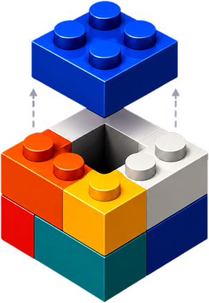
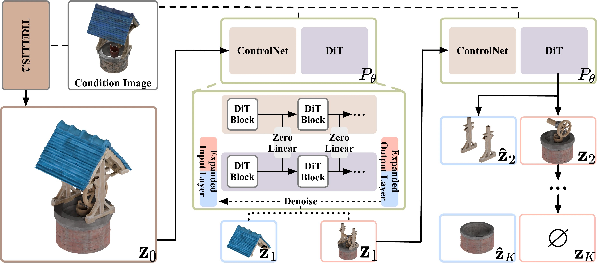
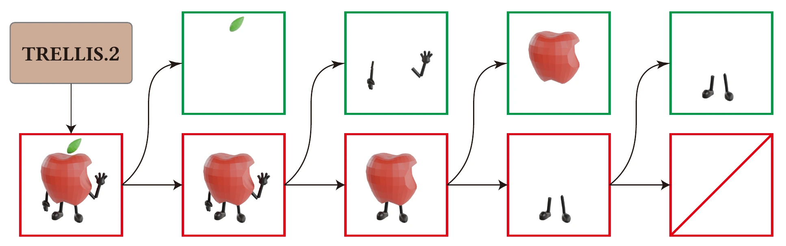
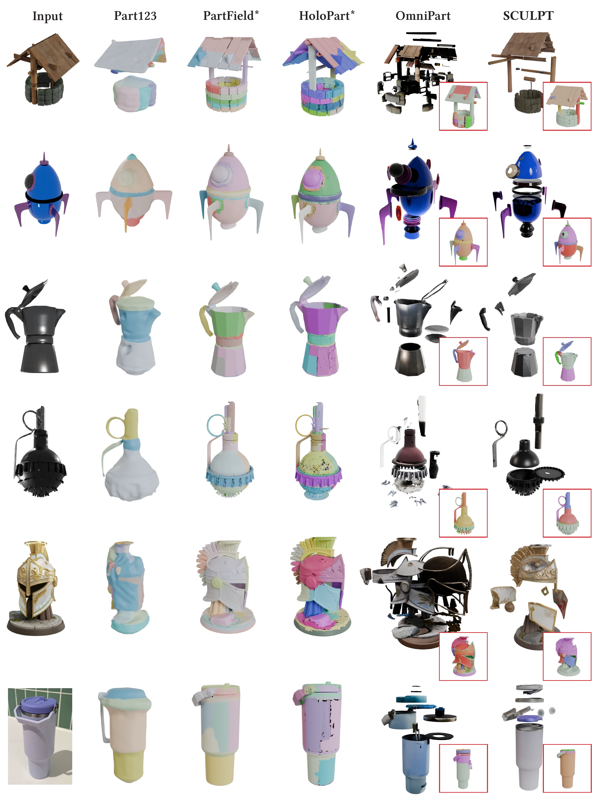

SCULPT generates complete 3D objects and decomposes them into
semantically meaningful, textured parts — part by part,
inside the generator's own latent space.
Drag to orbit, scroll to zoom, and use the Explode slider to pull the generated parts apart.
Every part below was generated by SCULPT — closed, textured, and pre-aligned in the object frame.
Models are compressed for the web (5–20 MB each) and load on demand.
Exploded views of more generated objects. Each clip shows the complete object bursting into its generated parts.
SCULPT scales to intricate assemblies with up to hundreds of parts — the part count adapts to each object.
Starting from a complete object generated by a pretrained structured-latent backbone, SCULPT applies a joint split predictor that couples an image-conditioned denoising branch with a ControlNet-style branch injecting the current 3D state. At every step it generates one extracted part together with the updated remainder in a single coupled denoising process, so the two outputs share an interface shell on the native sparse support — adjacent parts stay aligned without welding, snapping, or rescaling.


Compared with segmentation-based and additive part-generation baselines (Part123, OmniPart, PartField, SAM3D, HoloPart pipelines), SCULPT preserves global shape while producing coherent part boundaries and appearance, improving part-level Chamfer distance by 7.0% over the strongest baseline on the PartObjaverse benchmark.

@misc{sculpt2026,
title={SCULPT: Subtractive Composition for 3D Part Generation},
author={Sikuang Li and Chen Yang and Jiemin Fang and Jiazhong Cen and Yuhe Wei and Jichen Pang and Wei Shen and Qi Tian},
year={2026},
eprint={2608.13541},
archivePrefix={arXiv},
primaryClass={cs.CV},
url={https://arxiv.org/abs/2608.13541},
}